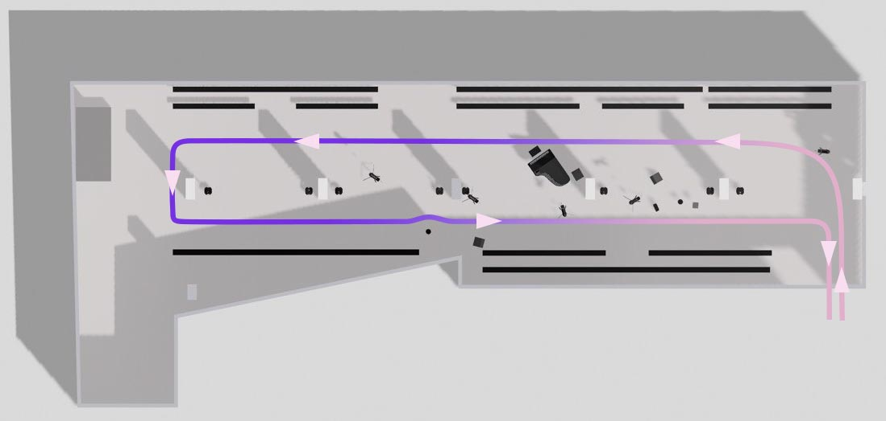

Welcome to the Training Center
Hello dear beautiful human beings! This is the Training Center for CFCL Vol. 11at Paris Fashion Week Womenswear Spring/Summer 2026 We are very happy to be with you today :) Nile & Dylan
üë£ Walking

The overall walk should feel light and smooth. The beginning music may feel a little slow, but keep your tempo steady — follow the rhythm as it flows. Think of lightness — as if you can feel the wind around you. Imagine you are on your way to the cinema with your friends — you’re looking forward to meeting them, feeling calm and at ease. Along the path, you may pass a musician — if so, shift your path smoothly, keeping the motion natural and relaxed. There’s no rush, no stiffness — let your body move with ease. At the corners, don’t make them sharp — take them softly and fluidly, with graceful continuity. As the show moves forward, the piano music becomes stronger — try to capture that strength in your walk. Let your presence grow — your posture taller, your movements more elegant and assured. In the last half, you become even more composed and refined, carrying a quiet sense of confidence and power. Maintain a micro smile, subtle but sincere. You are elegant, light, and present — moving as if the air itself is guiding you.
During the finale, make sure the gap between you and the models in front and behind you stays tight!
Walking speed (100bpm)
❄️ Atmosphere and mood
The show is being presented at La Gaîté Lyrique, a French digital arts and modern music centre. The atmosphere for the show is like a rehearsal, as if you're preparing backstage for a big concert.
üéº About the music
The music is by TLF Trio, an experimental chamber music ensemble consisting of cellist Cæcilie Trier, pianist Jakob Littauer and guitarist M. K. Frøslev. Their latest album "Desire" was released last month on the label 15 love. Have a listen to these excerpts before the show so you know what to expect:
üåé Scenography & architecture
IRCAM's éspace de projection ("Espro") is a very high-tech space, featuring a moveable ceiling and mechanical walls that can be set to different acoustics. The scenography is kept very minimal to give the sound and looks the centre stage.
ü™° Collection
CFCL's knitwear is created through the intertwining loops of a single, flexible thread, capturing the essence of the times to create clothing for contemporary life. The Vol. 10 collection takes inspiration from social anthropologist Tim Ingold's book LINES: A Brief History, reflecting on the brand's origins and reimagining the trial-and-error process of creating clothing solely through knitwear as 'lines.' These lines, curving, folding, and gradually expanding, illustrate the trajectory of CFCL's continuous exploration. By reinterpreting the ancient craft of spinning and knitting threads, rooted in human evolution, through the lens of modern technology and sensibilities, CFCL tells the story of 'Knit-ware' — an expression of free, bold lines that shape a new era.